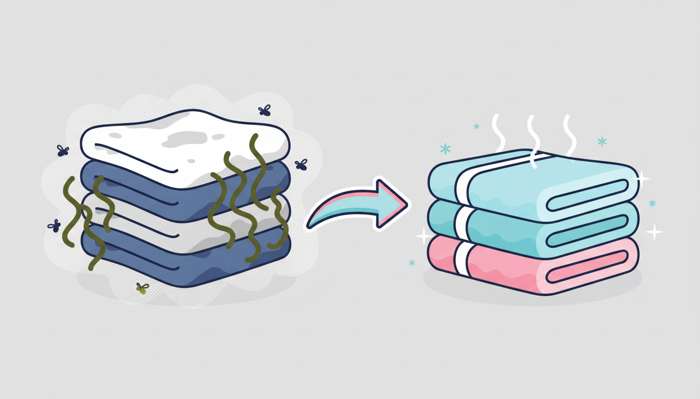

You pull a towel out of the cupboard, hold it up to your face, and there it is — that unmistakable musty smell that makes you wonder whether it's actually clean at all. It's one of the most common laundry frustrations. The good news? It's completely fixable, and once you understand what causes it, you can stop it coming back.
Why Do Towels Smell Musty?
That sour, mildewy odour is a sign that bacteria and mildew have taken hold in the fibres. Towels are the perfect breeding ground because they spend most of their life damp. Every time you use one, you transfer body oils, dead skin cells, and moisture into the fabric. If the towel doesn't dry out completely between uses, bacteria multiply rapidly and produce that characteristic musty smell.
But damp towels aren't the only culprit. There are a few common laundry mistakes that make the problem much worse:
Overloading the washing machine. When you cram too many towels into the drum, water and detergent can't circulate properly. The towels don't get a thorough clean, and trapped moisture creates the perfect conditions for bacteria to survive the wash cycle.
Using too much detergent. This one surprises a lot of people. Excess detergent leaves a residue in the fabric that traps moisture and bacteria. Over time, this residue builds up and creates a waxy coating that actually makes your towels less absorbent and more prone to smelling.
Leaving towels sitting in the machine. Wet towels sitting in a closed drum is basically an incubator for mildew. Even a couple of hours can be enough to undo the cleaning the wash just achieved.
How to Fix Musty Towels
If your towels already have that stubborn musty smell, a regular wash cycle probably won't cut it. You need to strip out the built-up bacteria, mildew, and detergent residue. Here's how.
The Vinegar Trick
White vinegar is one of the most effective natural deodorisers for towels. Run your towels through a hot wash cycle (60 degrees or higher) and add one cup of white vinegar directly to the drum — no detergent. The heat kills bacteria, and the vinegar breaks down the residue and oils that trap odours. Don't worry about your towels smelling like a fish and chip shop; the vinegar scent disappears completely during the rinse cycle.
The Baking Soda Follow-Up
For towels that are particularly far gone, follow the vinegar wash with a second hot wash using half a cup of baking soda instead of detergent. Baking soda neutralises any remaining odours and softens the fabric naturally. After this double treatment, your towels should smell completely fresh.
Use Hot Water
Temperature matters when you're trying to kill bacteria. A cold or warm wash won't do the job here — you need hot water, ideally 60 degrees Celsius or above. Most towels are made from cotton and can handle hot washes without any issues. Check the care label if you're unsure, but for standard bath towels, a hot cycle is both safe and effective.
How to Prevent Musty Towels
Hang towels up to dry immediately after use. Spread them out on a towel rail or hook so air can circulate around the entire surface. Avoid bunching or folding them while they're still damp.
Wash towels every three to four uses. Waiting longer than this gives bacteria too much time to build up, especially in humid bathrooms.
Use less detergent than you think you need. Follow the manufacturer's recommendation — or even use slightly less. Your towels will actually come out cleaner without the residue build-up.
Don't leave wet towels in the machine. Transfer them to the dryer or clothesline as soon as the wash cycle finishes. Setting a timer on your phone is a simple way to remember.
Why Commercial Machines Wash Towels Better
One of the biggest reasons towels develop a musty smell at home is that domestic washing machines simply can't wash them thoroughly enough. The drums are too small, the water pressure is too low, and four or five bath towels packed into a home machine don't get proper water circulation. The outer layers get clean, but the inner folds hold onto bacteria, oils, and detergent residue.
Commercial laundromat machines are built differently. Larger drums give towels room to tumble freely. Higher water pressure flushes out contaminants that home machines leave behind. And a powerful spin cycle extracts far more water, which means faster drying and less opportunity for bacteria to regrow.
At Laundry Day, our machines range from 10KG up to 27KG, so you can wash a full household's worth of towels in a single load without cramming. Every wash includes free detergent, and our commercial dryers get towels bone-dry fast — even during Melbourne's cooler months. We never charge card fees, so you can tap and go.
If your towels have been battling that musty smell and nothing seems to fix it, bring them in for a hot commercial wash at any of our three Melbourne locations — Brunswick East, St Albans, and Maribyrnong. Sometimes all it takes is one proper wash to reset things.
Time to Freshen Up Your Towels?
A single hot wash in our commercial machines can strip out months of built-up bacteria and odour. Free detergent, zero card fees.
Find Your Nearest Location